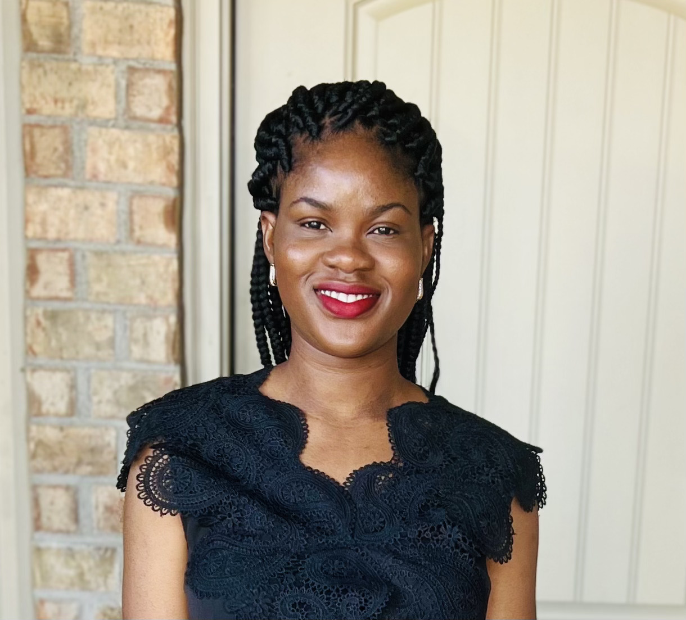

Education
-
Eastern University – M.S. in Data Science (2024 - July 2025)
- Completed Courses:
Data Manipulation, Data Science for Business, Data Analytics in R,
Data and Database Management with SQL, Cloud Foundations,
Fundamentals of Machine Learning, Applied Machine Learning, Natural Language Processing,
Ethical and Philosophical Issues in Data Science, Applied Data Science & Analytics.
- Capstone Projects:
- The Model Doesn’t Speak My Pain” – Investigated algorithmic bias in symptom
interpretation for marginalized health communities using NLP and ethics frameworks.
- Smart Sickle Diary App - Developed a machine learning app to analyze patient-reported
pain/emotion logs and visualize insights using NLP and Streamlit.
- University of Texas at Austin – Postgraduate Certificate in AI/ML (2024–2025)
- Obafemi Awolowo University – B.A. in Music (2011–2013)
- The Polytechnic Ibadan – Associate’s Degree in Music Technology (2009–2010)
Work Experience
-
Faculty Teaching Assistant – Eastern University (November 2025 - Present)
- Support faculty and students in DTSC 690: Data Science Capstone – Ethical and Philosophical Issues in Data
Science, providing assistance with course administration, student communication, and assessment support.
-
Founder & Lead ML Engineer – Smart Sickle Cell Diary App, Independent (June 2025 - November 2025)
- Designed and deployed a Streamlit app (Hugging Face Spaces) for people living with SCD to log symptoms and
receive LLM-powered insights with trigger detection (cold, dehydration, stress, exertion).
- Built a lightweight RAG pipeline (FAISS) and Insight Card UX; added tester feedback loop and CSV export for
personal records.
- Ensured ethical AI, user agency, and fairness by implementing transparent algorithms and user control features,
fostering trust and inclusivity in the app.
- Ran a 14-day mini-pilot with de-identified logs; improved onboarding via a how-to video and in-app tips.
- Utilized Python, pandas, FAISS, Streamlit, OpenAI, Hugging Face, and GitHub Pages to develop the app,
ensuring robust functionality and seamless integration of technologies.
- Developed and launched a portfolio site for the Smart Sickle Cell Diary App using HTML and Streamlit, enhancing
user engagement and accessibility.
Technical Skills
- Languages: Python, SQL, R, HTML/CSS
- Libraries & Frameworks: TensorFlow, Keras, PyTorch, Scikit-Learn, OpenCV, NLTK, Gensim
- Database: PostgreSQL
- Tools & Platforms: AWS (S3, SageMaker, Lambda), Streamlit, Git, Jupyter, VS Code
Certifications
- Udacity Nanodegree: AWS Machine Learning Engineer, AI Programming with Python
- Codecademy: ML/AI Engineer, NLP for Data Scientists, Machine Learning
Scholarships
- AWS & Udacity AI/ML Scholar (2023, 2024):
Selected among top applicants for hands-on learning in cloud-based model deployment, deep learning, and automation.
Graphic - Headshot
